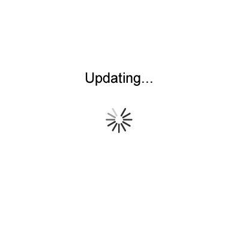

Interesting links: |
|
| Prefuse: An amazing interactive library to represent data http://prefuse.org/ | |
| Wordle: A word cloud generator http://www.wordle.net/ | |
| Tag Cloud: Nice 3D cloud of tags http://www.tag-cloud.de Example | |
| TV Calendar: A TV series calendar to not miss an episode http://www.pogdesign.co.uk/cat/ | |
| NetSpeak: An English online assistant for writing http://www.netspeak.eu/ | |
|  | |